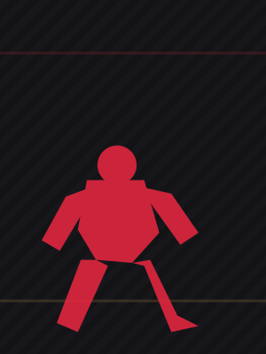

From 18-0 to two losses in a row
An unbeaten run and a title shot once looked inevitable. Now Nurmagomedov's path back is the real question.
9 min readAug 2026
Umar Nurmagomedov's career arc — from an unbeaten climb to the top of the bantamweight division to two straight losses that now cloud his path back.

From a regional circuit in Dagestan to a UFC title fight — and now a second consecutive setback — mapped fight by fight.

Opened his career on Russia's regional Fight Nights Global circuit, then won and defended titles in Russia's FMMAS and Uzbekistan's Gorilla Fighting promotions.
Opened his UFC run with a technical submission win over Sergey Morozov in Abu Dhabi.
Submitted Brian Kelleher, outpointed Nate Maness, iced Raoni Barcelos with a head-kick knockout, and decisioned Bekzat Almakhan.
Shut out Cory Sandhagen over five rounds in Abu Dhabi, stretching his record to 18-0 and forcing a title shot.
Dropped a decision to Merab Dvalishvili for the bantamweight title while fighting most of the bout with a broken hand.
Knocked out in round two by Song Yadong as a -600 favorite, falling to 20-2 and raising real questions about the path back to a title shot.
An unbeaten run and a title shot once looked inevitable. Now Nurmagomedov's path back is the real question.
A rollercoaster record with a knack for peaking against the fighters who matter most.
The first loss came compromised. The second didn't — and that distinction matters for what comes next.
Coaching adjustments and in-fight reads that shaped these career turns.
Read Corner Notes